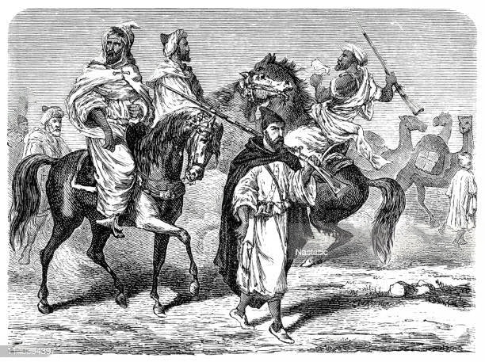

Algeo ― Historical Timeline

3000 BC - 1000 BC
Early Civilizations and Berber Identity
- Ancient Saharan Civilizations: The Sahara was once fertile, with rivers and
lakes, and it supported ancient civilizations. Rock art in the Tassili n’Ajjer mountains
(now a UNESCO World Heritage site) shows depictions of animals like elephants, giraffes, and
cattle, indicating a green Sahara around 8,000 years ago.
- Proto-Berber Cultures (around 2000 BC): Early Berber communities formed,
skilled in agriculture and animal domestication.
1100 - 146 BC
Phoenician and Carthaginian Influence
- Phoenician Colonization: The Phoenicians established trading outposts along
the North African coast, bringing culture and trade networks.
- Rise of Carthage: Carthage, a Phoenician colony, rose to power and
influenced Algeria’s coastal regions.
202 - 46 BC
The Numidian Kingdom
- Kingdom of Numidia: Numidia emerged as an independent Berber kingdom under
King Massinissa, renowned for its cavalry and alliances with Rome.
- Massinissa's Role: Massinissa united Berber tribes, creating a strong state
that is remembered as a golden era in Algerian history.
46 BC - 430 AD
Roman Algeria
- Roman Provinces: Algeria’s lands became part of the Roman Empire, with
cities like Timgad and Tipasa.
- Berber Resistance: Rome struggled with Berber resistance from groups like
the Mauri.
430 - 700 AD
Vandal and Byzantine Rule
- Vandal Invasion: The Germanic Vandals invaded Algeria, establishing a
kingdom that controlled coastal cities.
- Byzantine Influence: The Byzantine Empire re-conquered Algeria, but their
control remained limited to coastal areas.
700 - 1500 AD
Islamic Conquest and Berber Dynasties
- Arrival of Islam: Arab Muslim armies reached Algeria in the 7th century,
introducing Islam.
- Berber Dynasties: By the 10th century, Berber dynasties like the Almoravids
rose to power.
1516 - 1830
Ottoman Rule
- Integration with the Ottomans: Algeria became a semi-autonomous Ottoman
province, ruled by a Dey.
- Resistance to Foreign Invasions: The Ottoman period saw conflicts with
pirates and internal resistance.
1830 - 1954
French Colonization
- Algerian Conquest: France invaded Algeria, establishing it as a colony.
- World Wars and Nationalism: Colonial troops fought for France, and
post-WWII nationalism grew.
1954 - 1962
Algerian War and Decolonization
- Algerian War of Independence: The FLN launched a war for independence from
France.
- Évian Accords: Algeria gained independence in 1962, ending 132 years of
French colonial rule.
1962 - Present
Post-Independence Algeria
- Nation Building: Algeria focused on building its identity and
infrastructure after independence.
- Challenges: The country faced political challenges, economic struggles, and
civil unrest.
- Recent Developments: Algeria has seen changes in leadership and ongoing
social movements for reform.